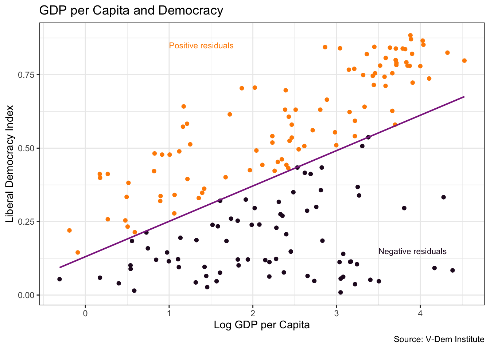

Statistical modeling is one of the most powerful tools in data science. We use models for two primary purposes: to explore relationships between variables and to make predictions. Sometimes we are interested in understanding causal relationships (Does oil wealth impact regime type?), while other times we focus on predictive accuracy (Where is violence most likely to happen during an election? Is this email spam?).
In this module, we will explore linear regression, one of the foundational techniques in statistical modeling. We will learn how to quantify relationships between variables using correlation coefficients, fit linear models to data, and interpret the results. Throughout, we will work with real data examining the relationship between a country’s wealth and its level of democracy.
By the end of this module, you will be able to calculate correlations, fit simple linear regression models, and interpret the coefficients in meaningful ways. You will also understand the crucial distinction between correlation and causation.
Understanding Relationships Between Variables
When we build statistical models, we need to distinguish between different types of variables. The response variable (also called the dependent variable, outcome variable, target, or Y variable) is what we are trying to understand or predict. The explanatory variables (also called independent variables, predictors, features, or X variables) are what we use to explain variation in the response.
’>}}
For example, if we want to understand what factors influence a country’s level of democracy, democracy would be our response variable. Potential explanatory variables might include GDP per capita, education levels, natural resource wealth, or historical factors.
Let’s examine a real-world example using data on countries’ wealth and democratic institutions.
Example: GDP per Capita and Democracy
We’ll use data from the Varieties of Democracy (V-Dem) project, which provides comprehensive measures of democratic institutions around the world.
library(tidyverse)library(vdemlite)# Load V-Dem data for 2019model_data<-fetchdem(indicators =c("v2x_libdem", "e_gdppc", "v2cacamps"), start_year =2019, end_year =2019)|>rename( country =country_name, lib_dem =v2x_libdem, wealth =e_gdppc, polarization =v2cacamps)|>filter(!is.na(lib_dem), !is.na(wealth))glimpse(model_data)
Let’s visualize the relationship between these two variables:
ggplot(model_data, aes(x =wealth, y =lib_dem))+geom_point(color ="steelblue")+geom_smooth(method ="lm", color ="#E48957", se =FALSE)+scale_x_log10(labels =scales::label_dollar(suffix ="k"))+labs( title ="Wealth and Democracy, 2019", x ="GDP per capita (log scale)", y ="Liberal Democracy Index", caption ="Source: V-Dem Institute")+theme_minimal()
Important
Here we use scale_x_log10() to transform the x-axis to a logarithmic scale. This is often useful when dealing with variables that are not normally distributed or that span several orders of magnitude. Later, when we analyze the relationship between GDP and other variables, we will take a log transformation of it (for the same reason). To do this we will call the log() function on the wealth variable in our model data, e.g. log(model_data$wealth).
What do you notice about this relationship? There appears to be a positive association between wealth and democracy; countries with higher GDP per capita tend to have higher democracy scores. At the same time there are a number of outliers in the southwest corner of the plot. These represent wealthy countries that are not very democratic. A lot of these tend to be oil rich states like Saudi Arabia and the United Arab Emirates.
Correlation: Measuring Linear Relationships
Before we fit a formal model, let’s quantify the strength of the linear relationship using a correlation coefficient. The correlation coefficient (often denoted as r) measures the strength and direction of a linear relationship between two quantitative variables.
Correlation coefficients range from -1 to +1:
r = +1: Perfect positive linear relationship
r = 0: No linear relationship
r = -1: Perfect negative linear relationship
|r| > 0.7: Strong linear relationship
0.3 < |r| < 0.7: Moderate linear relationship
|r| < 0.3: Weak linear relationship
There are several ways to calculate correlations in R. The base R function cor() provides a quick way:
# Using base R - note we need to use log(wealth) to match our plotcor(log(model_data$wealth), model_data$lib_dem)
[1] 0.5295884
We can also use tidyverse approaches for more complex analyses:
# Using tidyverse approach with summarizemodel_data|>summarize( correlation =cor(polarization, lib_dem), correlation_rounded =round(correlation, 3))
The correlation of approximately 0.53 indicates a moderate positive linear relationship between log GDP per capita and democracy levels. The relationship would likely be stronger if it were not for the outliers we saw in the plot.
Your Turn!!
Calculate the correlation between democracy and the polarization variable. How does it compare to the correlation using logged wealth?
Linear Models as Functions
’>}}
We can represent the relationship between variables using mathematical functions. A function describes the relationship between an output and one or more inputs - plug in the inputs and receive back the output.
For a simple linear model with one explanatory variable, we write:
\[Y = a + bX\]
Where:
\(Y\) is the response variable (outcome, target)
\(X\) is the explanatory variable (predictor)
\(a\) is the intercept (predicted value of Y when X = 0)
\(b\) is the slope (change in Y for a one-unit change in X)
Running a Linear Model in R
Let’s fit a linear model to our democracy and wealth data using the base R lm() function. Since we saw that the relationship looks more linear when we log-transform wealth, we’ll use that approach. We will then use the summary() function to display the model results.
# Run the modeldemocracy_model<-lm(lib_dem~log(wealth), data =model_data)# Display model resultssummary(democracy_model)
Call:
lm(formula = lib_dem ~ log(wealth), data = model_data)
Residuals:
Min 1Q Median 3Q Max
-0.57441 -0.14334 0.03911 0.18730 0.37017
Coefficients:
Estimate Std. Error t value Pr(>|t|)
(Intercept) 0.13051 0.03806 3.429 0.000758 ***
log(wealth) 0.12040 0.01471 8.188 5.75e-14 ***
---
Signif. codes: 0 '***' 0.001 '**' 0.01 '*' 0.05 '.' 0.1 ' ' 1
Residual standard error: 0.2233 on 172 degrees of freedom
Multiple R-squared: 0.2805, Adjusted R-squared: 0.2763
F-statistic: 67.04 on 1 and 172 DF, p-value: 5.754e-14
Our fitted model is:
\[Democracy = 0.13 + 0.12 × log(wealth)\]
Model Interpretation
Let’s break down what these coefficients mean:
Intercept (a = 0.13): This is the predicted democracy level when log(wealth) = 0. Since log(wealth) = 0 when wealth = $1, this represents the predicted democracy score for a country with $1 GDP per capita - essentially a theoretical baseline.
Slope (b = 0.12): This is the key coefficient for interpretation. For every one-unit increase in log(wealth), we predict democracy to increase by 0.12 points.
When we use logarithmic transformations, interpretation requires special care. When we change from one wealth level to another, we need to calculate the difference in their logarithms and multiply by our slope coefficient.
For any percentage increase in GDP per capita, we multiply our slope (0.12) by the natural log of the multiplier. For example, a 10% increase means multiplying by 1.1, doubling means multiplying by 2, tripling means multiplying by 3, and so on:
A 10% increase (e.g., from $10,000 to $11,000) increases the democracy score by 0.0114 points since \(0.12 \times \ln(1.1) \approx 0.12 \times 0.0953 = 0.0114\)
Doubling GDP per capita (e.g., $10,000 → $20,000) increases the democracy score by \(0.12 \times \ln(2) \approx 0.12 \times 0.693 = 0.083\)
Tripling GDP per capita (e.g., $10,000 → $30,000) increases the democracy score by: \(0.12 \times \ln(3) \approx 0.12 \times 1.099 = 0.132\)
Your Turn!!
Use the model we just ran to make predictions for specific countries or wealth levels, e.g. $50,000 per capita, $100,000 per capita, etc.
Try regressing democracy on polarization. Interpret the model coefficients for different levels of polarization. (Note that this variable is not logged.)
Understanding Predicted Values and Residuals
Every model produces predicted values - these are the outputs from our model function given specific input values (like the ones we calculate earlier for our wealth and democracy model). We often write these as Ŷ (Y-hat) to distinguish them from observed values.
Residuals measure how far each observation is from its predicted value:
\[Residual = Observed Value (Y) - Predicted Value (\hat{Y})\]
Let’s visualize this:

Countries above the line have positive residuals (higher democracy than predicted by wealth alone), while countries below the line have negative residuals (lower democracy than predicted).
Model Performance and Limitations
How well does our model perform? We can assess this using R-squared, which tells us what proportion of variation in democracy is explained by wealth. If we call summary again on our model, we can see this value:
Call:
lm(formula = lib_dem ~ log(wealth), data = model_data)
Residuals:
Min 1Q Median 3Q Max
-0.57441 -0.14334 0.03911 0.18730 0.37017
Coefficients:
Estimate Std. Error t value Pr(>|t|)
(Intercept) 0.13051 0.03806 3.429 0.000758 ***
log(wealth) 0.12040 0.01471 8.188 5.75e-14 ***
---
Signif. codes: 0 '***' 0.001 '**' 0.01 '*' 0.05 '.' 0.1 ' ' 1
Residual standard error: 0.2233 on 172 degrees of freedom
Multiple R-squared: 0.2805, Adjusted R-squared: 0.2763
F-statistic: 67.04 on 1 and 172 DF, p-value: 5.754e-14
The R-squared value is approximately 0.28, meaning that about 28% of the variation in democracy scores can be explained by log GDP per capita. This is a reasonable result for a social science model, but it also indicates that there are many other factors influencing democracy that we have not accounted for. Approximately 72% of the variation remains unexplained by our model!
Correlation vs. Causation
Our model shows a strong association between wealth and democracy, but this does not prove that wealth causes democracy. There are several possible explanations for this relationship:
Wealth → Democracy: Perhaps economic development creates conditions that support democratic institutions
Third Variable: Perhaps other factors (education, culture, geography) influence both wealth and democracy
Reverse Causation: The relationship might work in both directions simultaneously
Establishing causation requires more sophisticated methods beyond simple correlation and regression, such as natural experiments, instrumental variables, or randomized controlled trials. In the context of linear regression, causal identification is beyond the scope of this course.
Conclusion
Linear regression is a foundational tool in data science, but it’s just the beginning. In future modules, we’ll explore multiple regression (with several explanatory variables), non-linear relationships, and more sophisticated modeling techniques.